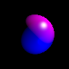

I downloaded a precongfigued template for visual studio C++ containing GLUT and freeImage for writing my program because i was having LINK 2020 error while manually configuring the libraries.
Getting to the Blue screen of Death
I starting to write a C++ code from scratch for the first time actually. Had some problem implementing the extern varaible to parse a file containing the commands to the raytracer,like size and height,feild of view of camera et cetera. Now I will be trying to accept the camera parameters and the width and height and try to display a black patch of screen. The canvas for the Raytracer.
I was able to read a size from the file and output a bitmap image using FIBITMAP(FreeIMage library) into the project directory. Now I am gonna try and position the eye and sample each pixel and store it on a film and then output the resulting image hence giving us the BSOD.
A note on the sampling. Since we are going to shoot rays into box and evaluate their refractions and reflections we have to consider a continuous space. The space inside a box is continuous, so let's consider this box is a cardboard box and the screen to be a rectangular glass plate placed on top of it. Now let's draw a grid on this glass plate. We call each cell on this plate a pixel. Now let's imagine the three dimensional objects to be rendered is somehow floating inside this box (maybe they are puppets on invsible strings, or they are under som spell!). When we look through each cell we might see more than just one color right. But how can that be? We can only get one color on a pixel. So this is where sampling comes in. We shoot a ray at the center of the cell (which are at (0.5,0.5),(1.5,0.5)...). We consider the pixel coordinates to be the upper left corner.
Phew! Done. This is the Blue screeen of doom. 100x100 pixels.


There were a lot of complications on the way. So first I implemented the color class. This is where the first catch comes in. When we are passing the BITMAP for saving the image we are passing a 8-bit RGB image specification. Whereas my calculation will be in the xyz color-cube space. So I had to use a set of equations to transform this to XYZ space. Right now I have implemented a linear transformation. So I am not in sRGB space.
After this I implemeted the film class. The film class records the color in the picture after the color calculation by the raytracer. Here we pass the sample into the film class. Since we are onlyy sampling in the center of the pixel in every case I did'nt use a bucket to store multiple samples. I will have to modify both film class and sampler class to have a multisampled raytracer. So for now i have recorded darkness in all pixels since there is nothing in our box.I just set the color to blue for contrast when displaying on this blog ;-).
Placing something inside the cardboard box
Okay now that we are staring into the darknesss of the cardboard box. I would like to place something inside the box to make sure my program can see.
First I implemented the camera class. It shoots rays into the virtual screen we have made. So right now we are staring into the dark box. Now we have to place something inside the box.
To place something inside the box. I decided to start with a sphere which is quiet simple since it needs minimum specification. I implemeted the sphere class which checks for intersection with the said rays from the camera throught the screen.
Now that we have everything running smoothly. It's time for the raytracer. I am going to implemet a minimal raytracer. Just shding a color in reaction to an intersection with the placed sphere. The output of this raytracer is shown below. Since I am not in sRGB space there was some issue with the color. I will fix that.

So to sum it up what we have here is a camera at the origin (0,0,0). The virtual screen is placed at (0,0,-1) and a sphere of radius 1 is placed at (0,0,-2); Sweet! Now let's move on.
Turning on the lights
I am using the blinn-phong model of lighting. So I implemented a class for directional lights. I got stuck with the declaration of an external variable in VC++. I had to use the /FORCE:MULTIPLE linker command line flag to complete the program. Okay now that I got that over with I wrote the lighting calculations inside the raytracer. This is the result i got for a single light with light position [1,1,1] and intensity of [0 0 .1]. I am not sure if I can identify it as a sphere or not unless I get some shadow on it.

Well I detected two real bugs in my code that's why the sphere looks like a sphere from a cartoon!. First the normal in the local geometry in the intersection point with the ray was not normalized properly. Second I had this real big bug in the calculation of the resulatant color. I was adding the color of the light to all points in the directional light class for no reason. I don't know why. Anyway the resultant images are far better but it still has some problem. I can't be sure if it is the nonsensical data or if it is because of another bug in the code. Well I guess that is the fun in it.



Tweaking all the specular,diffuse and ambient parameters makes me feel that these parameters make these rendered images more "beleivable". Since ambient parameter helps us understand the boundaries when the darkness eclipses a lot of the object due to the absence of light to those parts.